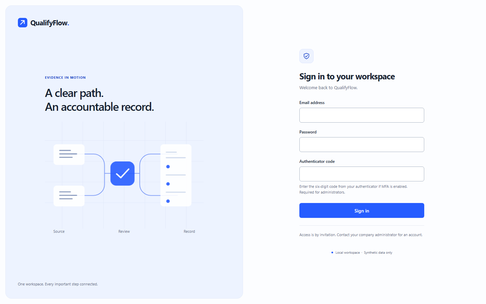
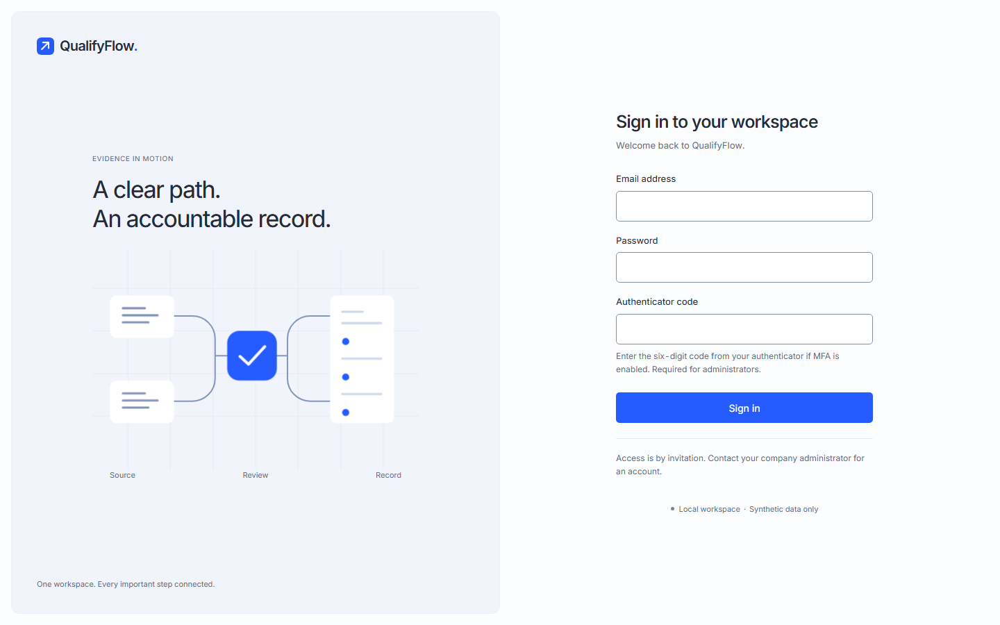
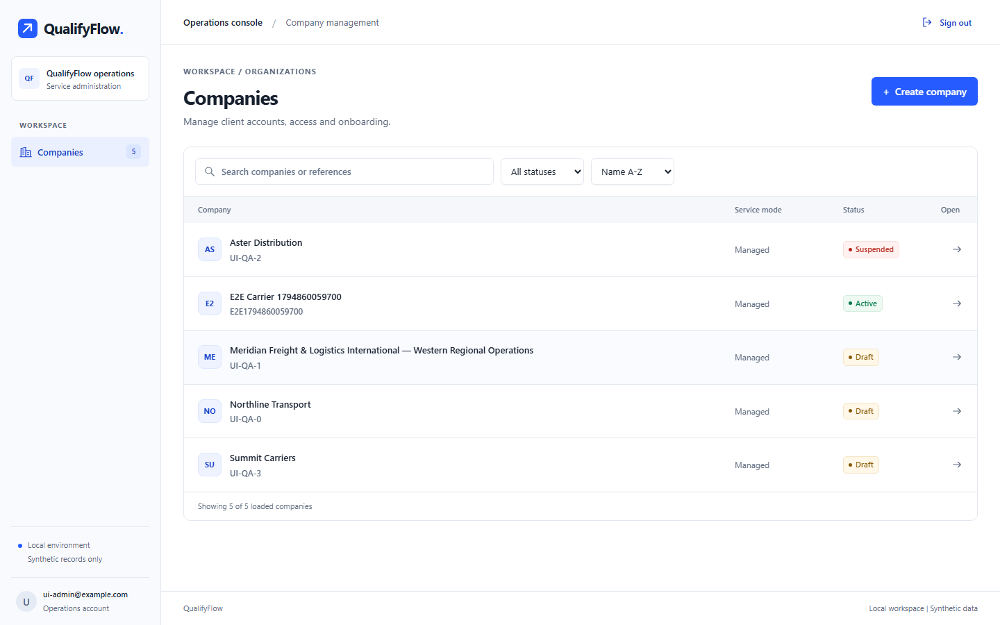
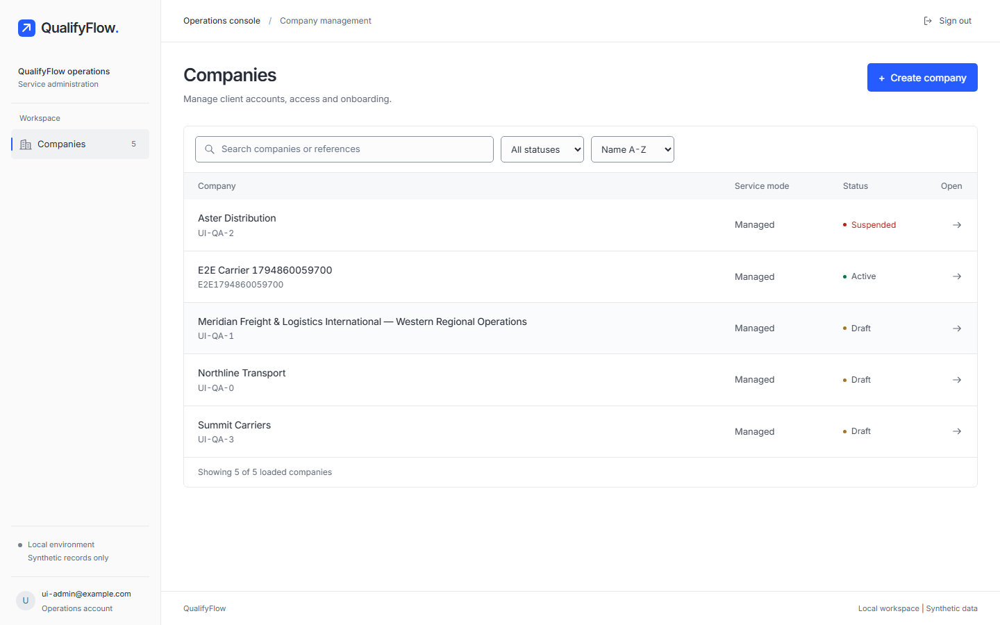
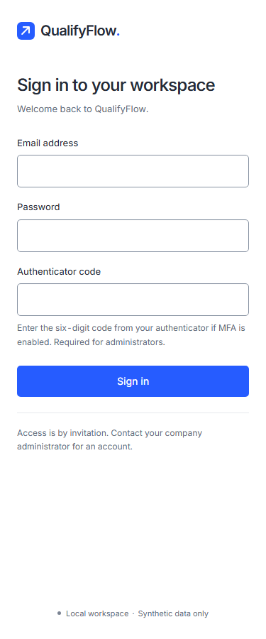
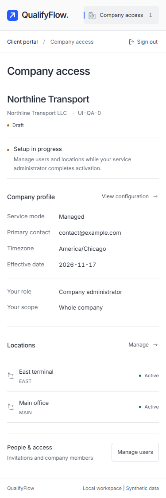

Actual browser captures from the running application, using the same isolated synthetic PostgreSQL fixtures. These are working account interfaces, not standalone mockups. Original specifications and authorization are preserved.
Design decisions and QA evidence · Full-size screenshots are linked below. Four-width captures are available in the before/after directories.





